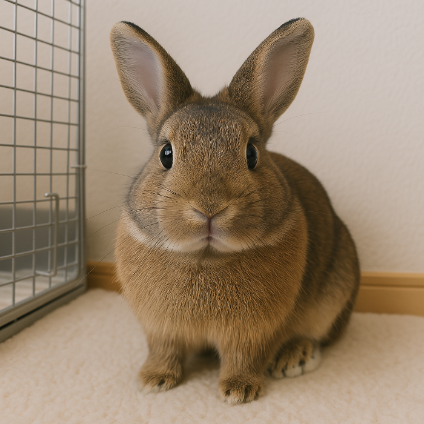
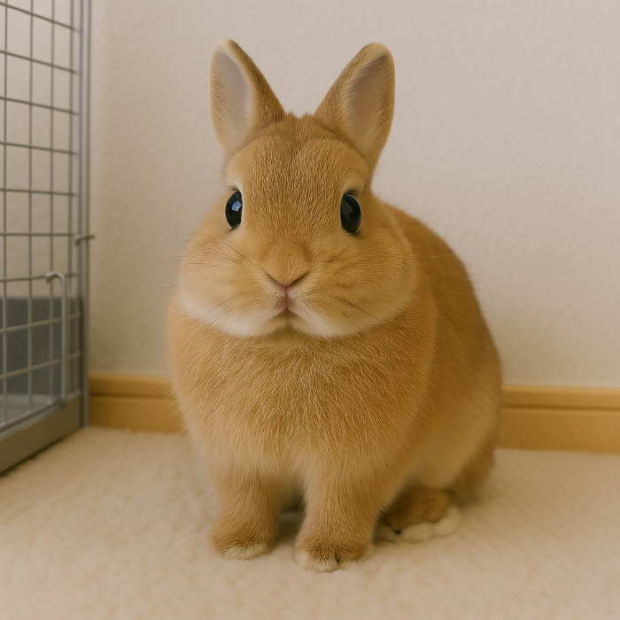
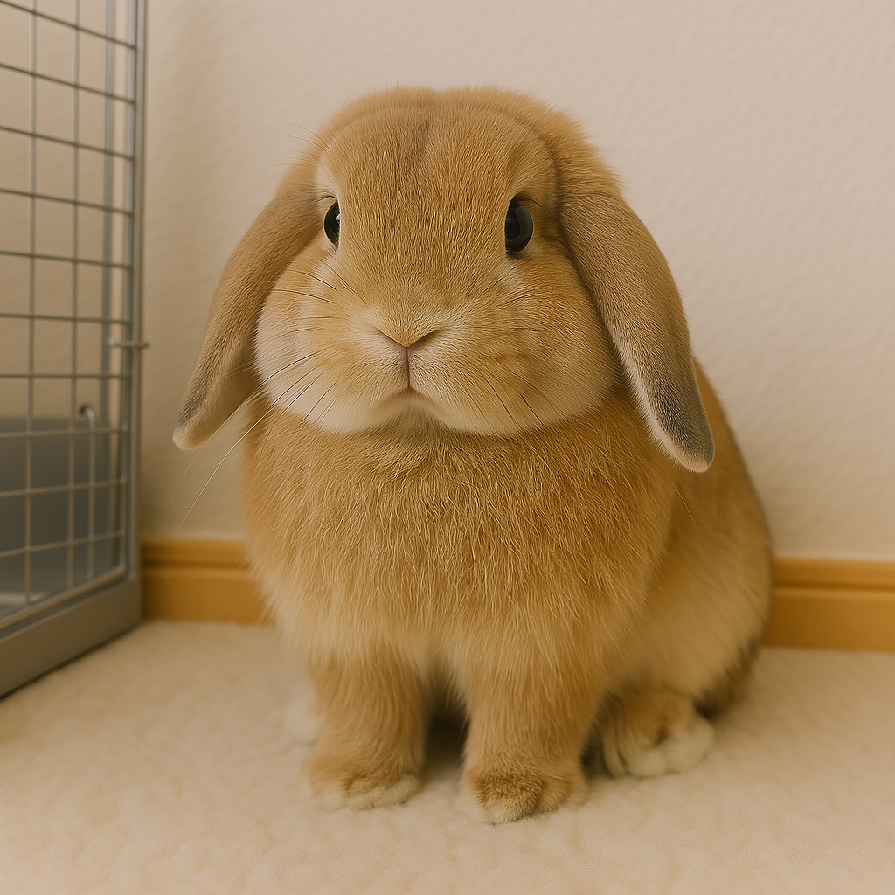
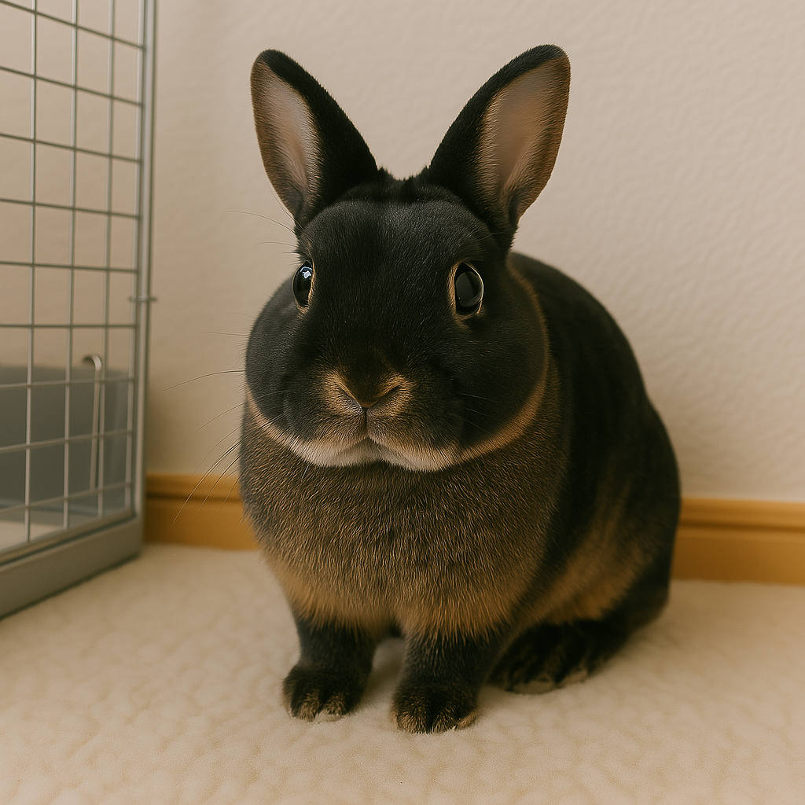

犬

ウサギの基本情報
学名
Oryctolagus cuniculus（主に飼育されているのはアナウサギの改良種）
寿命
一般的に5～10年、飼育環境・健康管理によっては10年以上生きることもあります
体重
種類によって異なりますが、1～3kgの小型種から5kg以上の大型種までいます
ウサギの性格・特徴
性格
基本的にはおとなしく、臆病ですが、好奇心も強く人によく慣れます。個体差が大きく、活発な子やおっとりした子も。
知能
比較的賢く、名前や簡単な指示を覚えることができます。
トイレのしつけ
比較的簡単で、決まった場所で排泄できるようになります。
代表的な種類

ネザーランドドワーフ
小型で丸い顔が特徴、人気種。

ホーランドロップ
垂れ耳がかわいらしい小型種。

ミニレッキス
なめらかな短毛で肌触りが特徴。